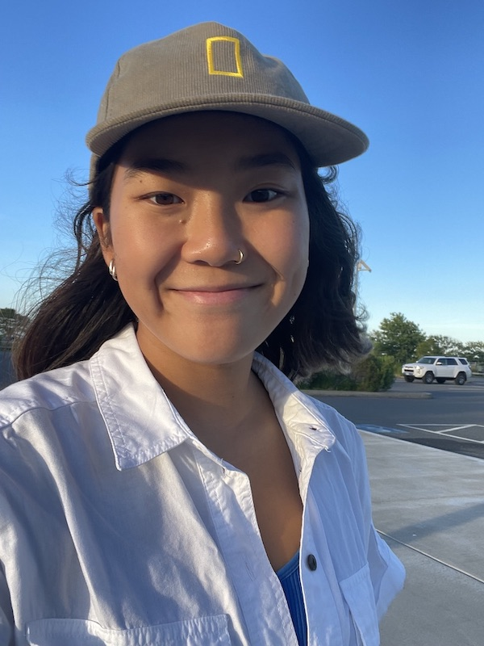

Amy Schaffer's Second First Website
My name is Amy Schaffer and I am a photojournalism student at the University of Missouri.
You can reach me at amyschaffer@mail.missouri.edu.
Why don’t pirates take a shower before they walk the plank? They just wash up on shore.
